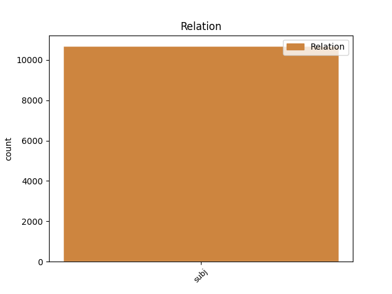
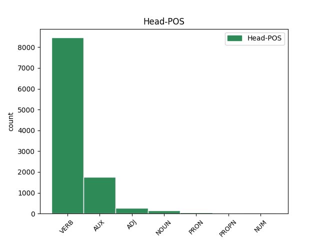
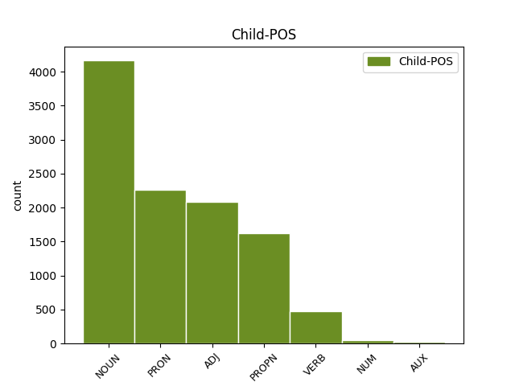

Distribution of features within this leaf



Agreement Rules sorted by frequency.
- When the dependent token is the subject(subj) of the head token, and the dependent token is NOUN.
1 καὶ _ _ _ _ 0 _ _ _
2 ἐάν _ _ _ _ 0 _ _ _
3 τις _ _ _ _ 0 _ _ _
4 ἀφέλῃ _ _ _ _ 0 _ _ _
5 ἀπὸ _ _ _ _ 0 _ _ _
6 τῶν _ _ _ _ 0 _ _ _
7 λόγων _ _ _ _ 0 _ _ _
8 τοῦ _ _ _ _ 0 _ _ _
9 βιβλίου _ _ _ _ 0 _ _ _
10 τῆς _ _ _ _ 0 _ _ _
11 προφητείας _ _ _ _ 0 _ _ _
12 ταύτης _ _ _ _ 0 _ _ _
13 ἀφελεῖ ἀφαιρέω VERB V- Mood=Ind|Number=Sing|Person=3|Tense=Fut|VerbForm=Fin|Voice=Act 0 _ _ _
14 ὁ _ _ _ _ 0 _ _ _
15 θεὸς θεός NOUN Nb Case=Nom|Gender=Masc|Number=Sing 13 subj _ ref=REV_22.19
16 τὸ _ _ _ _ 0 _ _ _
17 μέρος _ _ _ _ 0 _ _ _
18 αὐτοῦ _ _ _ _ 0 _ _ _
19 ἀπὸ _ _ _ _ 0 _ _ _
20 τοῦ _ _ _ _ 0 _ _ _
21 ξύλου _ _ _ _ 0 _ _ _
22 τῆς _ _ _ _ 0 _ _ _
23 ζωῆς _ _ _ _ 0 _ _ _
24 καὶ _ _ _ _ 0 _ _ _
25 ἐκ _ _ _ _ 0 _ _ _
26 τῆς _ _ _ _ 0 _ _ _
27 πόλεως _ _ _ _ 0 _ _ _
28 τῆς _ _ _ _ 0 _ _ _
29 ἁγίας _ _ _ _ 0 _ _ _
30 τῶν _ _ _ _ 0 _ _ _
31 γεγραμμένων _ _ _ _ 0 _ _ _
32 ἐν _ _ _ _ 0 _ _ _
33 τῷ _ _ _ _ 0 _ _ _
34 βιβλίῳ _ _ _ _ 0 _ _ _
35 τούτῳ _ _ _ _ 0 _ _ _
1 μαρτυρῶ μαρτυρέω VERB V- Mood=Ind|Number=Sing|Person=1|Tense=Pres|VerbForm=Fin|Voice=Act 0 _ _ _
2 ἐγὼ ἐγώ PRON Pp Case=Nom|Gender=Masc|Number=Sing|Person=1|PronType=Prs 1 subj _ ref=REV_22.18
3 παντὶ _ _ _ _ 0 _ _ _
4 τῷ _ _ _ _ 0 _ _ _
5 ἀκούοντι _ _ _ _ 0 _ _ _
6 τοὺς _ _ _ _ 0 _ _ _
7 λόγους _ _ _ _ 0 _ _ _
8 τῆς _ _ _ _ 0 _ _ _
9 προφητείας _ _ _ _ 0 _ _ _
10 τοῦ _ _ _ _ 0 _ _ _
11 βιβλίου _ _ _ _ 0 _ _ _
12 τούτου _ _ _ _ 0 _ _ _
1 καὶ _ _ _ _ 0 _ _ _
2 ἐάν _ _ _ _ 0 _ _ _
3 τις τὶς ADJ Px Case=Nom|Gender=Masc|Number=Sing 4 subj _ ref=REV_22.19
4 ἀφέλῃ ἀφαιρέω VERB V- Aspect=Perf|Mood=Sub|Number=Sing|Person=3|Tense=Past|VerbForm=Fin|Voice=Act 0 _ _ _
5 ἀπὸ _ _ _ _ 0 _ _ _
6 τῶν _ _ _ _ 0 _ _ _
7 λόγων _ _ _ _ 0 _ _ _
8 τοῦ _ _ _ _ 0 _ _ _
9 βιβλίου _ _ _ _ 0 _ _ _
10 τῆς _ _ _ _ 0 _ _ _
11 προφητείας _ _ _ _ 0 _ _ _
12 ταύτης _ _ _ _ 0 _ _ _
13 ἀφελεῖ _ _ _ _ 0 _ _ _
14 ὁ _ _ _ _ 0 _ _ _
15 θεὸς _ _ _ _ 0 _ _ _
16 τὸ _ _ _ _ 0 _ _ _
17 μέρος _ _ _ _ 0 _ _ _
18 αὐτοῦ _ _ _ _ 0 _ _ _
19 ἀπὸ _ _ _ _ 0 _ _ _
20 τοῦ _ _ _ _ 0 _ _ _
21 ξύλου _ _ _ _ 0 _ _ _
22 τῆς _ _ _ _ 0 _ _ _
23 ζωῆς _ _ _ _ 0 _ _ _
24 καὶ _ _ _ _ 0 _ _ _
25 ἐκ _ _ _ _ 0 _ _ _
26 τῆς _ _ _ _ 0 _ _ _
27 πόλεως _ _ _ _ 0 _ _ _
28 τῆς _ _ _ _ 0 _ _ _
29 ἁγίας _ _ _ _ 0 _ _ _
30 τῶν _ _ _ _ 0 _ _ _
31 γεγραμμένων _ _ _ _ 0 _ _ _
32 ἐν _ _ _ _ 0 _ _ _
33 τῷ _ _ _ _ 0 _ _ _
34 βιβλίῳ _ _ _ _ 0 _ _ _
35 τούτῳ _ _ _ _ 0 _ _ _
1 ἔπεσεν πίπτω VERB V- Aspect=Perf|Mood=Ind|Number=Sing|Person=3|Tense=Past|VerbForm=Fin|Voice=Act 0 _ _ _
2 Βαβυλὼν Βαβυλών PROPN Ne Case=Nom|Gender=Fem|Number=Sing 1 subj _ ref=REV_18.2
3 ἡ _ _ _ _ 0 _ _ _
4 μεγάλη _ _ _ _ 0 _ _ _
5 καὶ _ _ _ _ 0 _ _ _
6 ἐγένετο _ _ _ _ 0 _ _ _
7 κατοικητήριον _ _ _ _ 0 _ _ _
8 δαιμονίων _ _ _ _ 0 _ _ _
9 καὶ _ _ _ _ 0 _ _ _
10 φυλακὴ _ _ _ _ 0 _ _ _
11 παντὸς _ _ _ _ 0 _ _ _
12 πνεύματος _ _ _ _ 0 _ _ _
13 ἀκαθάρτου _ _ _ _ 0 _ _ _
14 καὶ _ _ _ _ 0 _ _ _
15 φυλακὴ _ _ _ _ 0 _ _ _
16 παντὸς _ _ _ _ 0 _ _ _
17 ὀρνέου _ _ _ _ 0 _ _ _
18 ἀκαθάρτου _ _ _ _ 0 _ _ _
19 καὶ _ _ _ _ 0 _ _ _
20 μεμισημένου _ _ _ _ 0 _ _ _
21 ὅτι _ _ _ _ 0 _ _ _
22 ἐκ _ _ _ _ 0 _ _ _
23 τοῦ _ _ _ _ 0 _ _ _
24 οἴνου _ _ _ _ 0 _ _ _
25 τοῦ _ _ _ _ 0 _ _ _
26 θυμοῦ _ _ _ _ 0 _ _ _
27 τῆς _ _ _ _ 0 _ _ _
28 πορνείας _ _ _ _ 0 _ _ _
29 αὐτῆς _ _ _ _ 0 _ _ _
30 πέπωκαν _ _ _ _ 0 _ _ _
31 πάντα _ _ _ _ 0 _ _ _
32 τὰ _ _ _ _ 0 _ _ _
33 ἔθνη _ _ _ _ 0 _ _ _
34 καὶ _ _ _ _ 0 _ _ _
35 οἱ _ _ _ _ 0 _ _ _
36 βασιλεῖς _ _ _ _ 0 _ _ _
37 τῆς _ _ _ _ 0 _ _ _
38 γῆς _ _ _ _ 0 _ _ _
39 μετ’ _ _ _ _ 0 _ _ _
40 αὐτῆς _ _ _ _ 0 _ _ _
41 ἐπόρνευσαν _ _ _ _ 0 _ _ _
42 καὶ _ _ _ _ 0 _ _ _
43 οἱ _ _ _ _ 0 _ _ _
44 ἔμποροι _ _ _ _ 0 _ _ _
45 τῆς _ _ _ _ 0 _ _ _
46 γῆς _ _ _ _ 0 _ _ _
47 ἐκ _ _ _ _ 0 _ _ _
48 τῆς _ _ _ _ 0 _ _ _
49 δυνάμεως _ _ _ _ 0 _ _ _
50 τοῦ _ _ _ _ 0 _ _ _
51 στρήνους _ _ _ _ 0 _ _ _
52 αὐτῆς _ _ _ _ 0 _ _ _
53 ἐπλούτησαν _ _ _ _ 0 _ _ _
1 Λέγει λέγω VERB V- Mood=Ind|Number=Sing|Person=3|Tense=Pres|VerbForm=Fin|Voice=Act 0 _ _ _
2 ὁ _ _ _ _ 0 _ _ _
3 μαρτυρῶν μαρτυρέω VERB V- Case=Nom|Gender=Masc|Number=Sing|Tense=Pres|VerbForm=Part|Voice=Act 1 subj _ ref=REV_22.20
4 ταῦτα _ _ _ _ 0 _ _ _
1 Καὶ _ _ _ _ 0 _ _ _
2 ἦλθεν ἔρχομαι VERB V- Aspect=Perf|Mood=Ind|Number=Sing|Person=3|Tense=Past|VerbForm=Fin|Voice=Act 0 _ _ _
3 εἷς εἷς NUM Ma Case=Nom|Gender=Masc|Number=Sing 2 subj _ ref=REV_21.9
4 ἐκ _ _ _ _ 0 _ _ _
5 τῶν _ _ _ _ 0 _ _ _
6 ἑπτὰ _ _ _ _ 0 _ _ _
7 ἀγγέλων _ _ _ _ 0 _ _ _
8 τῶν _ _ _ _ 0 _ _ _
9 ἐχόντων _ _ _ _ 0 _ _ _
10 τὰς _ _ _ _ 0 _ _ _
11 ἑπτὰ _ _ _ _ 0 _ _ _
12 φιάλας _ _ _ _ 0 _ _ _
13 τῶν _ _ _ _ 0 _ _ _
14 γεμόντων _ _ _ _ 0 _ _ _
15 τῶν _ _ _ _ 0 _ _ _
16 ἑπτὰ _ _ _ _ 0 _ _ _
17 πληγῶν _ _ _ _ 0 _ _ _
18 τῶν _ _ _ _ 0 _ _ _
19 ἐσχάτων _ _ _ _ 0 _ _ _
20 καὶ _ _ _ _ 0 _ _ _
21 ἐλάλησεν _ _ _ _ 0 _ _ _
22 μετ’ _ _ _ _ 0 _ _ _
23 ἐμοῦ _ _ _ _ 0 _ _ _
24 λέγων _ _ _ _ 0 _ _ _
1 δίκαιος _ _ _ _ 0 _ _ _
2 εἶ εἰμί AUX V- Mood=Ind|Number=Sing|Person=2|Tense=Pres|VerbForm=Fin|Voice=Act 0 _ _ _
3 ὁ _ _ _ _ 0 _ _ _
4 ὢν εἰμί AUX V- Case=Nom|Gender=Masc|Number=Sing|Tense=Pres|VerbForm=Part|Voice=Act 2 subj _ LId=1|ref=REV_16.5
5 καὶ _ _ _ _ 0 _ _ _
6 ὁ _ _ _ _ 0 _ _ _
7 ἦν _ _ _ _ 0 _ _ _
8 ὁ _ _ _ _ 0 _ _ _
9 ὅσιος _ _ _ _ 0 _ _ _
10 ὅτι _ _ _ _ 0 _ _ _
11 ταῦτα _ _ _ _ 0 _ _ _
12 ἔκρινας _ _ _ _ 0 _ _ _
13 ὅτι _ _ _ _ 0 _ _ _
14 αἵματα _ _ _ _ 0 _ _ _
15 ἁγίων _ _ _ _ 0 _ _ _
16 καὶ _ _ _ _ 0 _ _ _
17 προφητῶν _ _ _ _ 0 _ _ _
18 ἐξέχεαν _ _ _ _ 0 _ _ _
19 καὶ _ _ _ _ 0 _ _ _
20 αἷμα _ _ _ _ 0 _ _ _
21 αὐτοῖς _ _ _ _ 0 _ _ _
22 ἔδωκας _ _ _ _ 0 _ _ _
23 πεῖν _ _ _ _ 0 _ _ _
Disagree Examples:
1 Ἡροδότου _ _ _ _ 0 _ _ _
2 Ἁλικαρνησσέος _ _ _ _ 0 _ _ _
3 ἱστορίης _ _ _ _ 0 _ _ _
4 ἀπόδεξις _ _ _ _ 0 _ _ _
5 ἥδε _ _ _ _ 0 _ _ _
6 ὡς _ _ _ _ 0 _ _ _
7 μήτε _ _ _ _ 0 _ _ _
8 τὰ _ _ _ _ 0 _ _ _
9 γενόμενα γίγνομαι VERB V- Aspect=Perf|Case=Nom|Gender=Neut|Number=Plur|Tense=Past|VerbForm=Part|Voice=Mid 15 subj _ ref=1.1.0
10 ἐξ _ _ _ _ 0 _ _ _
11 ἀνθρώπων _ _ _ _ 0 _ _ _
12 τῷ _ _ _ _ 0 _ _ _
13 χρόνῳ _ _ _ _ 0 _ _ _
14 ἐξίτηλα _ _ _ _ 0 _ _ _
15 γένηται γίγνομαι VERB V- Aspect=Perf|Mood=Sub|Number=Sing|Person=3|Tense=Past|VerbForm=Fin|Voice=Mid 0 _ _ _
16 μήτε _ _ _ _ 0 _ _ _
17 ἔργα _ _ _ _ 0 _ _ _
18 μεγάλα _ _ _ _ 0 _ _ _
19 τε _ _ _ _ 0 _ _ _
20 καὶ _ _ _ _ 0 _ _ _
21 θωμαστά _ _ _ _ 0 _ _ _
22 τὰ _ _ _ _ 0 _ _ _
23 μὲν _ _ _ _ 0 _ _ _
24 Ἕλλησι _ _ _ _ 0 _ _ _
25 τὰ _ _ _ _ 0 _ _ _
26 δὲ _ _ _ _ 0 _ _ _
27 βαρβάροισι _ _ _ _ 0 _ _ _
28 ἀποδεχθέντα _ _ _ _ 0 _ _ _
29 ἀκλεᾶ _ _ _ _ 0 _ _ _
30 γένηται _ _ _ _ 0 _ _ _
31 τά _ _ _ _ 0 _ _ _
32 τε _ _ _ _ 0 _ _ _
33 ἄλλα _ _ _ _ 0 _ _ _
34 καὶ _ _ _ _ 0 _ _ _
35 δι’ _ _ _ _ 0 _ _ _
36 ἣν _ _ _ _ 0 _ _ _
37 αἰτίην _ _ _ _ 0 _ _ _
38 ἐπολέμησαν _ _ _ _ 0 _ _ _
39 ἀλλήλοισι _ _ _ _ 0 _ _ _
1 Ἡροδότου _ _ _ _ 0 _ _ _
2 Ἁλικαρνησσέος _ _ _ _ 0 _ _ _
3 ἱστορίης _ _ _ _ 0 _ _ _
4 ἀπόδεξις _ _ _ _ 0 _ _ _
5 ἥδε _ _ _ _ 0 _ _ _
6 ὡς _ _ _ _ 0 _ _ _
7 μήτε _ _ _ _ 0 _ _ _
8 τὰ _ _ _ _ 0 _ _ _
9 γενόμενα _ _ _ _ 0 _ _ _
10 ἐξ _ _ _ _ 0 _ _ _
11 ἀνθρώπων _ _ _ _ 0 _ _ _
12 τῷ _ _ _ _ 0 _ _ _
13 χρόνῳ _ _ _ _ 0 _ _ _
14 ἐξίτηλα _ _ _ _ 0 _ _ _
15 γένηται _ _ _ _ 0 _ _ _
16 μήτε _ _ _ _ 0 _ _ _
17 ἔργα ἔργον NOUN Nb Case=Nom|Gender=Neut|Number=Plur 30 subj _ ref=1.1.0
18 μεγάλα _ _ _ _ 0 _ _ _
19 τε _ _ _ _ 0 _ _ _
20 καὶ _ _ _ _ 0 _ _ _
21 θωμαστά _ _ _ _ 0 _ _ _
22 τὰ _ _ _ _ 0 _ _ _
23 μὲν _ _ _ _ 0 _ _ _
24 Ἕλλησι _ _ _ _ 0 _ _ _
25 τὰ _ _ _ _ 0 _ _ _
26 δὲ _ _ _ _ 0 _ _ _
27 βαρβάροισι _ _ _ _ 0 _ _ _
28 ἀποδεχθέντα _ _ _ _ 0 _ _ _
29 ἀκλεᾶ _ _ _ _ 0 _ _ _
30 γένηται γίγνομαι VERB V- Aspect=Perf|Mood=Sub|Number=Sing|Person=3|Tense=Past|VerbForm=Fin|Voice=Mid 0 _ _ _
31 τά _ _ _ _ 0 _ _ _
32 τε _ _ _ _ 0 _ _ _
33 ἄλλα _ _ _ _ 0 _ _ _
34 καὶ _ _ _ _ 0 _ _ _
35 δι’ _ _ _ _ 0 _ _ _
36 ἣν _ _ _ _ 0 _ _ _
37 αἰτίην _ _ _ _ 0 _ _ _
38 ἐπολέμησαν _ _ _ _ 0 _ _ _
39 ἀλλήλοισι _ _ _ _ 0 _ _ _
1 ἐγὼ _ _ _ _ 0 _ _ _
2 δὲ _ _ _ _ 0 _ _ _
3 περὶ _ _ _ _ 0 _ _ _
4 μὲν _ _ _ _ 0 _ _ _
5 τούτων _ _ _ _ 0 _ _ _
6 οὐκ _ _ _ _ 0 _ _ _
7 ἔρχομαι _ _ _ _ 0 _ _ _
8 ἐρέων _ _ _ _ 0 _ _ _
9 ὡς _ _ _ _ 0 _ _ _
10 οὕτω _ _ _ _ 0 _ _ _
11 ἢ _ _ _ _ 0 _ _ _
12 ἄλλως _ _ _ _ 0 _ _ _
13 κως _ _ _ _ 0 _ _ _
14 ταῦτα οὗτος ADJ Pd Case=Nom|Gender=Neut|Number=Plur 15 subj _ ref=1.5.3
15 ἐγένετο γίγνομαι VERB V- Aspect=Perf|Mood=Ind|Number=Sing|Person=3|Tense=Past|VerbForm=Fin|Voice=Mid 0 _ _ _
1 τὰ ὁ PRON Pr Case=Nom|Gender=Masc|Number=Plur|PronType=Rel 6 subj _ ref=1.5.4
2 γὰρ _ _ _ _ 0 _ _ _
3 τὸ _ _ _ _ 0 _ _ _
4 πάλαι _ _ _ _ 0 _ _ _
5 μεγάλα _ _ _ _ 0 _ _ _
6 ἦν εἰμί AUX V- Aspect=Imp|Mood=Ind|Number=Sing|Person=3|Tense=Past|VerbForm=Fin|Voice=Act 0 _ _ _
7 τὰ _ _ _ _ 0 _ _ _
8 πολλὰ _ _ _ _ 0 _ _ _
9 σμικρὰ _ _ _ _ 0 _ _ _
10 αὐτῶν _ _ _ _ 0 _ _ _
11 γέγονε _ _ _ _ 0 _ _ _
1 τὰ _ _ _ _ 0 _ _ _
2 γὰρ _ _ _ _ 0 _ _ _
3 τὸ _ _ _ _ 0 _ _ _
4 πάλαι _ _ _ _ 0 _ _ _
5 μεγάλα _ _ _ _ 0 _ _ _
6 ἦν _ _ _ _ 0 _ _ _
7 τὰ _ _ _ _ 0 _ _ _
8 πολλὰ πολύς ADJ A- Case=Nom|Degree=Pos|Gender=Neut|Number=Plur 11 subj _ ref=1.5.4
9 σμικρὰ _ _ _ _ 0 _ _ _
10 αὐτῶν _ _ _ _ 0 _ _ _
11 γέγονε γίγνομαι VERB V- Aspect=Perf|Mood=Ind|Number=Sing|Person=3|Tense=Past|VerbForm=Fin|Voice=Act 0 _ _ _